User Interface
Pista has provided a simplistic User Interface (UI) for you to organize your task easily. Pista includes alarm which you will be notified when a task is due soon. Pista is also available and compatible with Windows tablet.

Tour with Pista Interface
These lessons will introduce you to the different pieces that make up the Pista interface. Learn how to use the Undo & Redo, the Alarm, the Priority, the Edit and more.
Add a new task ›
Edit your task ›
Delete your task ›
Mark done & undone ›
Remind yourself ›
Prioritize your task ›
Undo & Redo your task ›
Help to the rescue ›
Refresh your list ›
Set your own preferences ›
Add a new task
You can add a new task into the list. Follow the guide below to learn more about adding a task.
- Click on the Add icon
 in the upper-right corner of Pista.
in the upper-right corner of Pista.
- From the Add pop-pop, fill in the title of the task, the start date and time and the end date and time.
Click on the calendar icon  to select the date.
to select the date.
Type in the hour field in 24 hours format (00 to 23).
Type in the minute field in this format - (00 - 59).
- After you have selected the title, dates and times of the task, click Add New Task to add your new task.
-
Alternatively, you can add a new task by command line. Read more about add command line
in the upper-right corner of Pista.
Click on the calendar icon
to select the date.Type in the hour field in 24 hours format (00 to 23).
Type in the minute field in this format - (00 - 59).
Edit your task
You can edit your task as well. Follow the guide below to learn more about adding a task.
- Click on the Edit icon
 at the task row which you like to edit.
at the task row which you like to edit.
- From the Edit pop-up, you are allowed to change the title, dates and time of the selected task.
Click on the calendar icon to select the date.
Type in the hour field in 24 hours format (00 to 23).
Type in the minute field in this format - (00 - 59).
- After your have confirmed the changes that you have made, click Edit to make the change.
-
Alternatively, you can edit your task by command line. Read more about edit command line
at the task row which you like to edit.
Click on the calendar icon
to select the date.Type in the hour field in 24 hours format (00 to 23).
Type in the minute field in this format - (00 - 59).
Delete your task
Deleting a task is simple by just a click. Follow the guide below to learn more about deleting a task.
- Click on the delete icon
 at the task row which you like to delete.
at the task row which you like to delete.
You will not be asked to confirm the deletion. If you have accidentally deleted a wrong task, you can refer to Undo & Redo section.
-
Alternatively, you can delete your task by command line. Read more about delete command line
at the task row which you like to delete.You will not be asked to confirm the deletion. If you have accidentally deleted a wrong task, you can refer to Undo & Redo section.
Mark done & undone
You can mark your task as done or undone. Follow the guide below to learn more about marking your task.
-
To mark as done, click on the opaque tick
 at the left of the task row.
at the left of the task row.
You may have different colors based on the following desriptions.
 Red box represent the task is overdue and undone.
Red box represent the task is overdue and undone. Yellow box represent the task is due less than one day.
Yellow box represent the task is due less than one day. Green box represent the task is mark as done.
Green box represent the task is mark as done.
-
Alternatively, you can mark your task by command line. Read more about marking command line
at the left of the task row.
You may have different colors based on the following desriptions.
- Red box represent the task is overdue and undone.
- Yellow box represent the task is due less than one day.
- Green box represent the task is mark as done.
Remind yourself
Follow the guide below to learn more about setting a remainder for your task.
- Click on the reminder icon 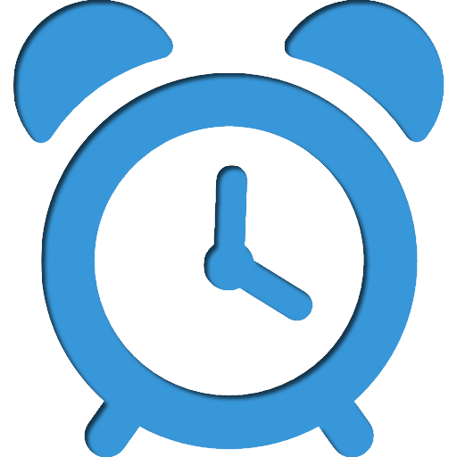 at the task row which you like to edit.
- From the reminder pop-up, you are allowed to change the date and time of the reminder for the selected task.
To on a reminder, click on the calendar icon to select the date
Type in the hour field in 24 hours format (00 to 23).
Type in the minute field in this format - (00 - 59).
To off a reminder, remove the values in both date and time fields.
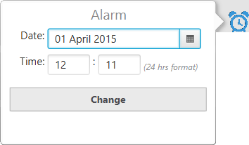
-
After your have confirmed the changes that you have made, click Change to make the change.
-
Alternatively, you can change the reminder by command line. Read more about reminder command line
To on a reminder, click on the calendar icon
to select the dateType in the hour field in 24 hours format (00 to 23).
Type in the minute field in this format - (00 - 59).
To off a reminder, remove the values in both date and time fields.
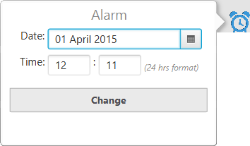
Prioritize your task
Follow the guide below to learn more about marking the importance levels of your tasks.
- Click on the priority icon 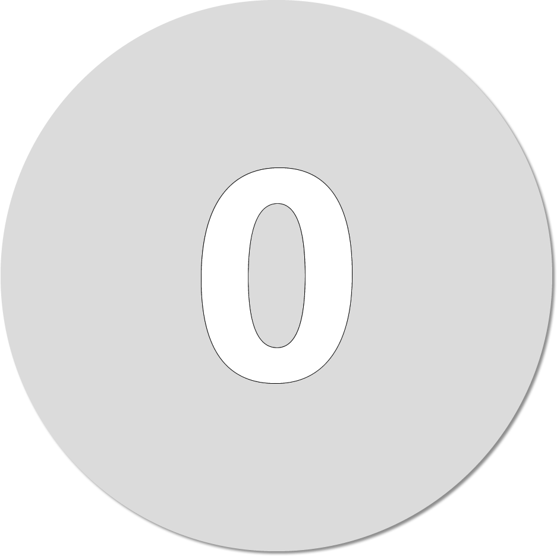 or 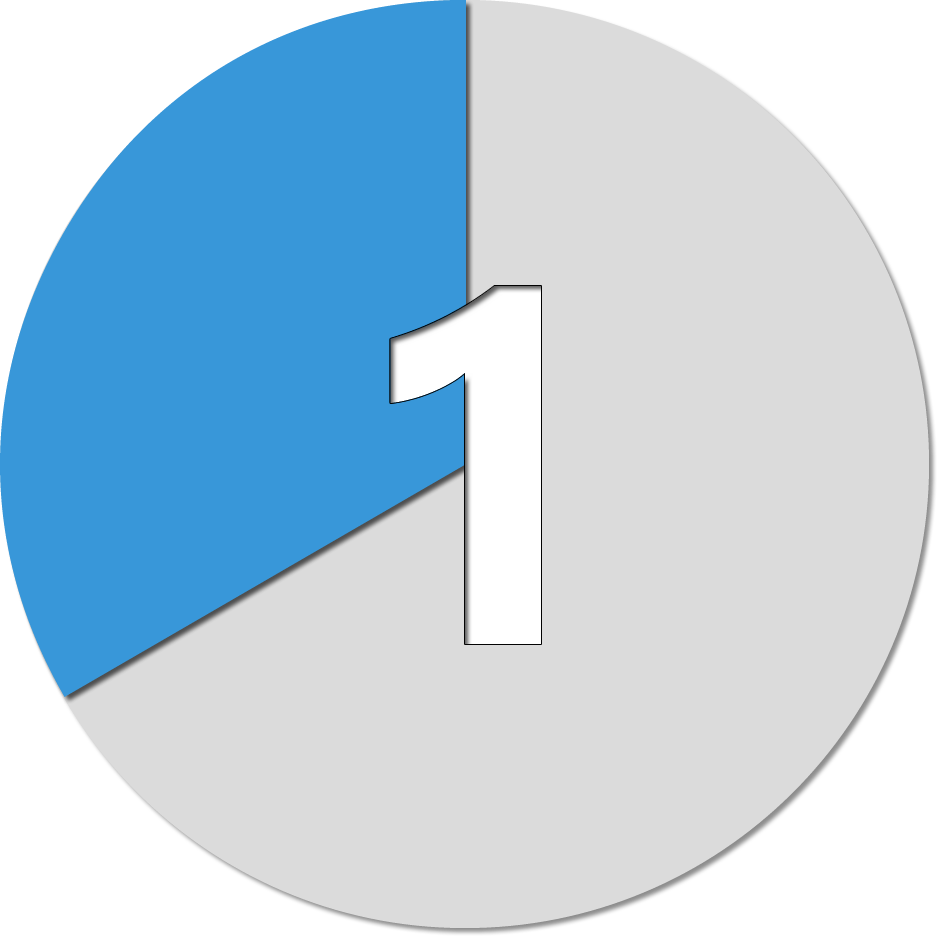 or 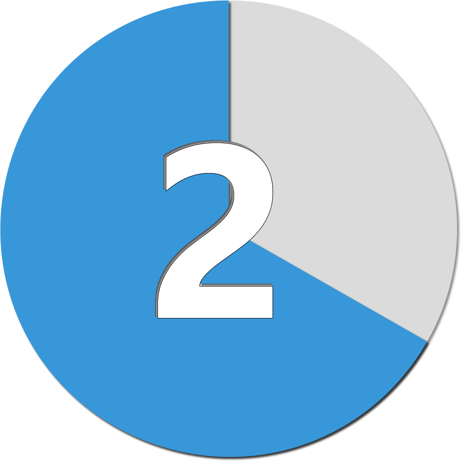 or 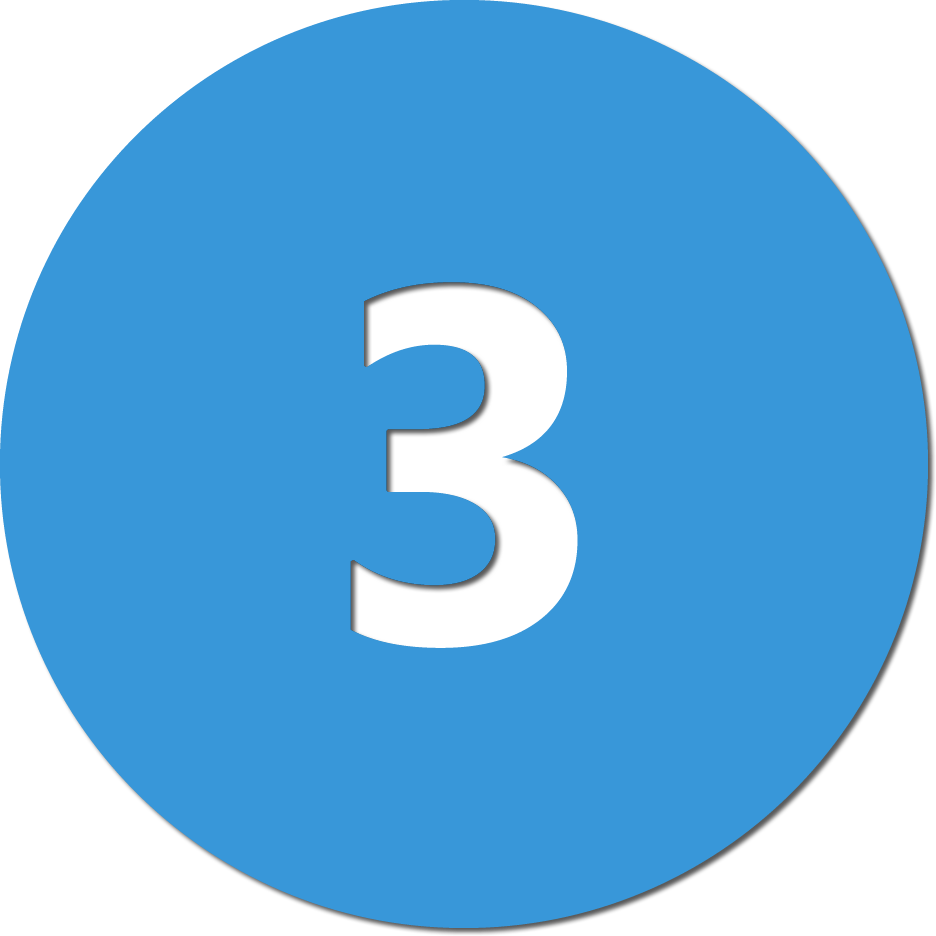 at the task row which you like to set the priority level.
- From the priority pop-up, there are four different priority levels.
Click on the check box beside the icon to select.
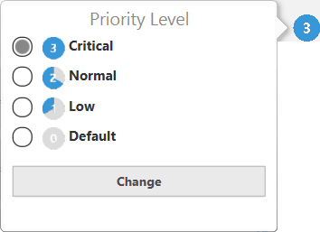
-
After your have confirmed the changes that you have made, click Change to make the change.
-
Alternatively, you can change the priority by command line. Read more about priority command line
Click on the check box beside the icon to select.
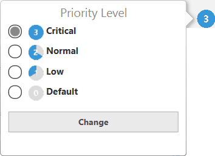
Undo & Redo your task
Follow the guide below to learn more about undo and redo your previous and current action.
-
To undo an action, click on the undo icon 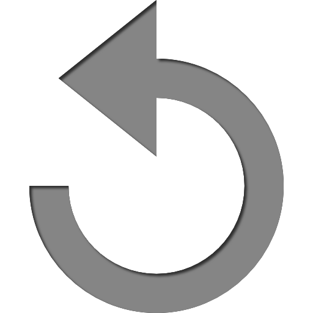 in the upper-left corner of Pista.
- To redo an action, click on the redo icon 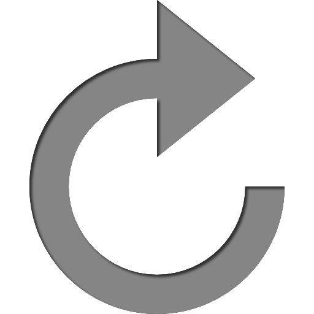 beside the undo icon.
-
Alternatively, you can access undo and redo by command line. Read more about undo and redo command line
Help to the rescue
There are several ways to access the help gudide. Follow the guide below to learn more about it.
-
To access help guide via keypad, press F1 on your keyboard.
-
Alternatively, click on help icon in the upper-right corner of Pista.
-
Again, you can access the help guide by command line. Read more about help command line
Refresh you list
You can also refresh your list if Pista failed to update your list.
-
Click on the refresh icon 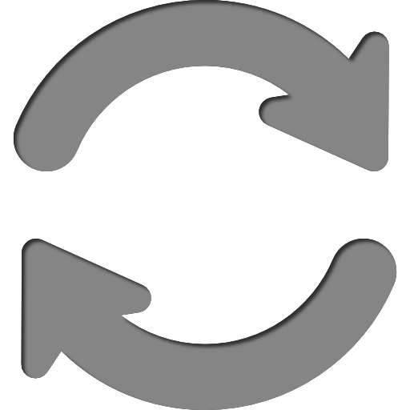 in the upper-right corner of Pista.
Set your own preferences
You can set your preferred file location to save your tasks.
-
Click on the setting icon 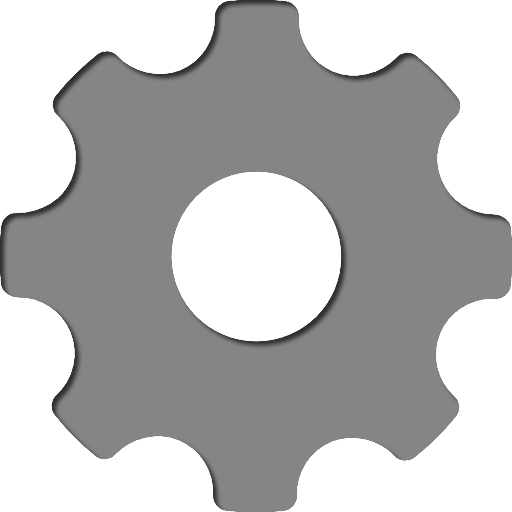 in the upper-right corner of Pista.
-
From the setting pop-up,
Click on Browse to find the valid file.
e.g. C:\Users\John\Desktop\abc.xml
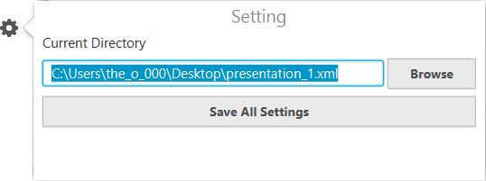
-
After your have confirmed the new file path, click Save All Settings to make the change. Pista will then update the new list based on the file that you have selected.
-
Alternatively, you can access the setting by command line. Read more about setting command line
Click on Browse to find the valid file.
e.g. C:\Users\John\Desktop\abc.xml
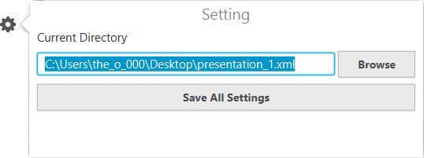